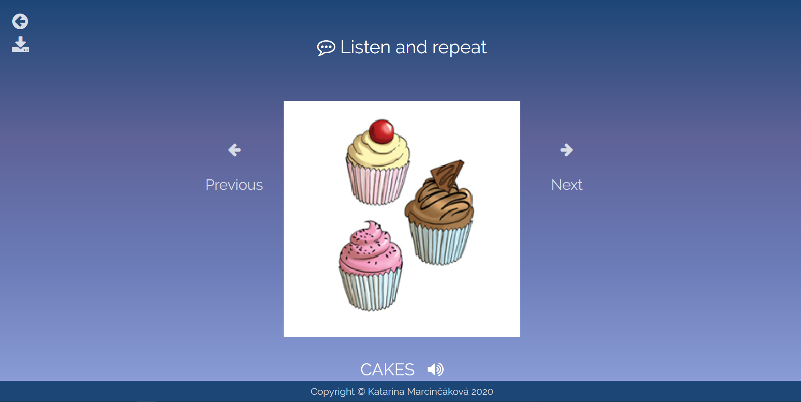

Katarína
Marcinčáková

Katarína
Marcinčáková
Ahojte! Volám sa Katarína Marcinčáková, mám 18 rokov a pochádzam z Košíc. Od desiatich rokov sa aktívne venujem robotike a programovaniu.
Vo voľnom čase vytváram webové stránky, programujem v Pythone a venujem sa hre na klavír, akordeón a flautu. Aktuálne pracujem na rozširovaní
webu o umelej inteligencii, ktorý slúži ako edukačný portál a zároveň
vytváram program pre kameru, ktorá poslúži ako "oko" pre futbalistu na súťaži RoboCup Junior kategória Soccer.
Taktiež sa pravidelne zúčastňujem roboticých súťaží, táborov, workshopov a prednášok, vďaka ktorým mám možnosť rozvíjať sa.
Okrem sebavzdelávania sa venujem aj vzdelávaniu iných. Dva roky som bola animátorkou na detskom prímestskom IT tábore, ktorý organizovala
moja škola a jeden rok som bola animátorkou na robotickom tábore organizovanom c.k. Wachumba. Taktiež som učila pár detí (11 - 14 rokov)
základy programovania (Python, Scratch) a tvorby webových stránok.
Workshop o umelej inteigencie - úvod do AI
kurz zameraný na 3D tlač
Workshop o tvorbe hier
Letná škola Trojstenu - Programovanie
Letné dvojtýždňové sústredenie zamerané na rozvoj informatických a elektrotechnických zručností
Gymnázium Alejová 1, Košice
ZŠ Park Angelinum 8, Košice
1. miesto v kategórii Learn
Cena dekana FIIT STU
1. miesto v kategórii Konštrukcia
2. miesto v kategórii OnStage Secondary
1. miesto v celkovom poradí
1. miesto v kategórii Line Follower
1. miesto v kategórii Fire Fighting 2. miesto v kategórii Line Follower
Najlepšie riešenie 2. úlohy
10. miesto v celkovom poradí
1. miesto v kategórii Vlastný model - model zvieratka
Najlepšie riešenie 1. úlohy
9. miesto v celkovom poradí
Regionálne kolo: 2. miesto v celkovom poradí
Finále V4: 1. miesto v celkovom poradí
Finále Strednej európy: 1. miesto v Live Challenge
3. miesto v kategórii Vlastný model - začiatočníci

Copyright © Katarína Marcinčáková 2020
Rainbow Bridge web
Tento web som vytvorila počas dištančného vzdelávania ako učebnú pomôcku pre žiakov druhého ročníka základnej školy, ktorí pracujú s učebnicou Rainbow Bridge 2. Slúži na učenie sa nových slovíčok, ktoré si deti vďaka audionahrávkam možu vypočuť a lepšie osvojiť. Taktiež tam postupom času bude pribúdať gramatika a cvičenia na jej tréning.
